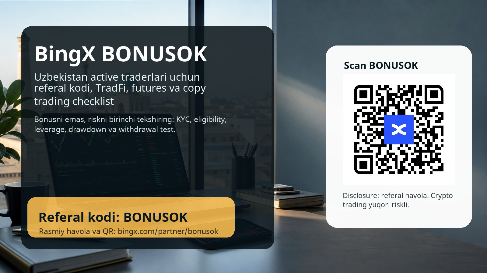
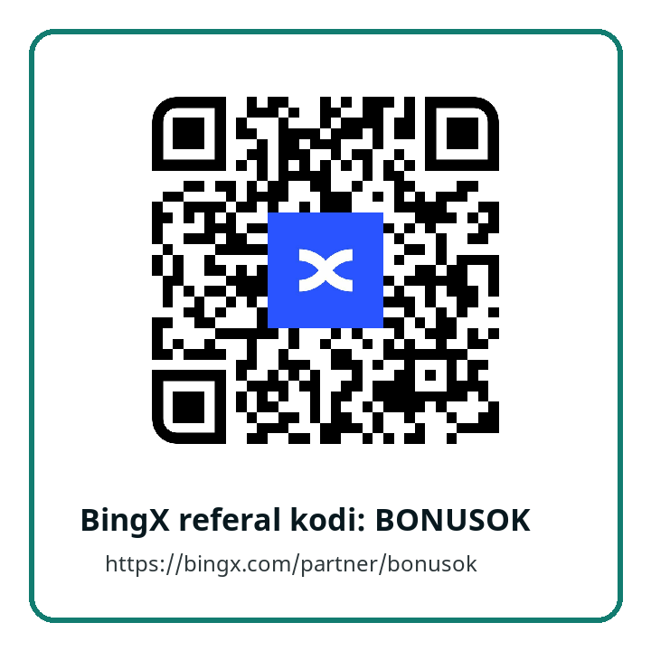

BingX referal kodi BONUSOK: Uzbekistan active traderlari uchun 2026 qo'llanma


Qisqa javob: BingX uchun referal kodi - BONUSOK. Rasmiy referal havola: <a href="https://bingx.com/partner/bonusok" rel="sponsored nofollow">https://bingx.com/partner/bonusok</a>. Ro'yxatdan o'tishdan oldin kod qo'llanganini, bonus shartlarini, KYC talablarini, O'zbekistondagi huquqiy cheklovlarni va mahsulot mavjudligini tekshiring.
Oshkoralik: bu sahifada referal havola bor. Siz shu havola orqali ro'yxatdan o'tsangiz yoki savdo qilsangiz, biz komissiya olishimiz mumkin. Risk ogohlantirishi: kripto, futures, leverage, copy trading va bonus kampaniyalari yuqori riskli. Bonus yoki cashback foydani kafolatlamaydi; shartlar region, KYC, depozit, savdo hajmi, mahsulot turi va birja qoidalariga qarab o'zgarishi mumkin.
Nega aynan BingX va nega bu material Uzbekistan traderlari uchun yozildi
Ko'p foydalanuvchi qidiruvga BingX referal kodi, BingX promo kod, BingX bonus code, BingX invite code, BingX cashback yoki BingX copy trading deb yozadi. Bunday qidiruv ortida ikki xil odam bo'ladi. Birinchi odam faqat bonusni ko'radi va shartlarni o'qimay tez depozit qilishni xohlaydi. Ikkinchi odam esa ro'yxatdan oldin exchange qanday mahsulot beradi, qaysi mahsulot unga mos, risk qayerda, kod qanday tekshiriladi va huquqiy tarafdan nimalarga ehtiyot bo'lish kerakligini bilmoqchi bo'ladi. Bizning maqsadimiz ikkinchi guruhni jalb qilish: haqiqiy active trader, ya'ni platformani tushunib, reja bilan savdo qiladigan, 30 va 90 kundan keyin ham hisobini boshqaradigan foydalanuvchi.
Uzbekistan auditoriyasi uchun bu yondashuv juda muhim. O'zbekistonda kripto aktivlar bo'yicha tartibga solish, service provider litsenziyalari, reklama talablari va mahalliy cheklovlar bor. Global birja sahifasidagi mahsulot sizga ko'rinsa ham, bu hamma foydalanuvchi uchun har doim bir xil huquqiy yoki amaliy imkoniyat bor degani emas. Shuning uchun bu sahifa hech qachon "tez kir, katta bonus ol, muammo yo'q" degan ohangda yozilmaydi. To'g'ri savol boshqacha: BingX sizning savdo uslubingizga mosmi, sizga kerak bo'lgan mahsulot Uzbekistan rezidenti yoki Uzbekistan ichidan kirayotgan foydalanuvchi uchun mavjudmi, va siz riskni oldindan o'lchay olasizmi?
2026 yil iyun oyidagi yangiliklar BingXni ayniqsa active traderlar uchun qiziqarli ko'rsatmoqda. Birinchidan, BingX $1 milliondan ortiq mukofot fondiga ega Stock Trading Carnival kampaniyasini e'lon qildi. Bu stock futures va TradFi yo'nalishidagi qiziqishni ko'paytiradi, ayniqsa Nvidia, Apple, Tesla, semiconductor va AQSh bozorlariga qaraydigan traderlar uchun. Ikkinchidan, BingX o'z ekotizimida TradFi yo'nalishini alohida muhim ustun sifatida ko'rsatyapti: kripto bilan birga aksiyalar, indekslar, xomashyo yoki metallar narrativi bir joyda kuzatiladi. Uchinchidan, Ultra TradingView integratsiyasi professional charting, indikatorlar, order flow va futures workflow bilan ishlaydigan traderlar uchun kuchli signal. To'rtinchidan, BingX copy trading bo'yicha alohida ta'lim modullariga ega: lead trader tanlash, drawdown, win rate, copy ratio, stop-copy va daily loss limit kabi tushunchalar birinchi kunning o'zidayoq tekshirilishi kerak.
Demak, ushbu materialning asosiy g'oyasi oddiy: BONUSOK kodini faqat kirish eshigi deb ko'ring, asosiy qiymat esa BingXning active trading stackini ehtiyotkorlik bilan tekshirishda. Agar siz bonus ortidan riskni oshirsangiz, referal kod sizga yordam bermaydi. Agar siz kodni to'g'ri tekshirib, mahsulotni tushunib, kichik test depozit, xavfsizlik sozlamalari va trading journal bilan boshlasangiz, bu havola siz uchun tartibli onboarding bo'lishi mumkin.
BingXdagi so'nggi yangiliklar: trader uchun nimasi muhim
Stock Trading Carnival oddiy reklama sarlavhasi emas; u BingXning kripto-only imijidan kengroq TradFi savdo maydoniga o'tishga urinayotganini ko'rsatadi. Kampaniya stock futures atrofida qurilgani uchun bu auditoriyani ikki tomondan tortadi: kripto traderlari endi aksiyalar narrativini kuzatishi mumkin, stock-market tarafidan kelganlar esa kripto birjasidagi derivatives muhitini ko'radi. Lekin aynan shu yerda xavf ham bor. Aksiya nomi tanish bo'lsa, contract risk, leverage, funding, spread, liquidation va region cheklovlari avtomatik ravishda tushunarli bo'lib qolmaydi.
TradFi integratsiyasi haqida yozilgan BingX materiali ham shu yo'nalishni tasdiqlaydi. Birja o'z ekotizimida crypto, traditional finance, commodity va social trading elementlarini birlashtirishga harakat qilmoqda. Active trader uchun bu qulay: bitta joyda ko'p instrument, ko'p chart, ko'p signal va copy trading statistikasi bor. Ammo qulaylik doim ham yaxshi qaror degani emas. Bir platformada juda ko'p imkoniyat ochilganda, trader har bir bozorni savdo qilish kerak deb o'ylashi mumkin. Uzbekistan foydalanuvchisi uchun to'g'ri yondashuv - avval watchlist va trade listni ajratish. Watchlist - o'rganayotgan instrumentlar. Trade list - sizning aniq setupingiz, risk limit va chiqish qoidangiz bor instrumentlar.
Ultra TradingView integratsiyasi futures traderlar uchun alohida qiziq. Agar chart, order turi, indikator, stop loss, take profit va timeframe bilan ishlash siz uchun muhim bo'lsa, bunday integratsiya savdo jarayonini tezlashtiradi. Lekin tezlik ikki qirrali: yaxshi strategiyada execution yaxshilanadi, yomon odatda esa overtrading kuchayadi. Shuning uchun ushbu materialda Ultra TradingView "ko'proq trade ochish" vositasi sifatida emas, balki savdo rejasi, risk o'lchovi va order intizomini tekshirish vositasi sifatida ko'rsatiladi.
Copy trading esa BingXning eng tanilgan yo'nalishlaridan biri. Yangi foydalanuvchi uchun bu jozibali: tajribali lead traderni tanlab, uning bitimlarini avtomatik ko'chirish mumkin. Ammo copy trading passiv daromad emas. Eng yuqori ROI ko'rsatgan trader kelajakda ham shunday natija qiladi degan kafolat yo'q. Lead trader leverage ishlatishi, short-term luck bilan statistikasi chiroyli ko'rinishi, kichik drawdown davrida yaxshi, katta volatilityda esa xavfli bo'lishi mumkin. Shu sababli, copy tradingni ishlatmoqchi bo'lgan odam avval drawdown, maksimal allocation, stop-copy, daily loss limit, copy ratio va traderning so'nggi 30/90 kunlik xatti-harakatini ko'rishi kerak.
Uzbekistan foydalanuvchisi uchun huquqiy va amaliy ehtiyot chorasi
Bu sahifa huquqiy maslahat emas. Lekin Uzbekistan auditoriyasi uchun alohida ogohlantirish berish shart: kripto aktivlar bilan bog'liq xizmatlar mamlakatda tartibga solinadi, service provider faoliyati litsenziya va mahalliy talablar bilan bog'liq. NAPP sahifalarida crypto-assets turnover sohasidagi service provider turlari, litsenziya, mahalliy server, AML/CFT, personal data va reklama talablari haqida ma'lumot bor. Shuning uchun global exchange havolasi ko'rinishi sizga hamma mahsulotlar kafolatli ochiq degani emas.
Amaliy jihatdan bu nimani anglatadi? Birinchidan, ro'yxatdan o'tishdan oldin BingX Terms, Risk Disclosure, KYC talablarini va siz kirayotgan mamlakat/rezidentlik ma'lumotini tekshiring. Ikkinchidan, agar siz Uzbekistan rezidenti bo'lsangiz, global platformadagi mahsulotlardan foydalanish bo'yicha mahalliy qonunchilikni mustaqil tekshiring. Uchinchidan, fiat onramp, bank karta, P2P, withdrawal va KYC yo'llarini kichik test bilan sinang; katta depozitdan oldin withdraw test qilish ko'p muammolarni oldini oladi. To'rtinchidan, biror mahsulot sizga platformada ko'rinsa ham, region, campaign, bonus yoki futures eligibility bo'yicha alohida cheklov bo'lishi mumkin.
Bu ehtiyotkorlik referal konversiyani kamaytiradigandek tuyulishi mumkin, lekin aslida sifatni oshiradi. Bizga bir marta klik qilgan, keyin muammoga uchragan yoki shartni tushunmay ketgan foydalanuvchi kerak emas. Bizga o'z eligibility holatini tekshirgan, riskni bilgan, kichik testdan boshlagan va uzoqroq muddat active bo'lishi mumkin bo'lgan trader kerak. Aynan shunday foydalanuvchi referal biznes uchun ham, o'zi uchun ham yaxshiroq.
BONUSOK kodini qanday tekshirish kerak
Ro'yxatdan o'tish jarayonida eng muhim qadam - kod qo'llanganini depozitdan oldin tekshirish. Buning uchun rasmiy referal havolani oching: <a href="https://bingx.com/partner/bonusok" rel="sponsored nofollow">BingX BONUSOK referal havolasi</a>. Agar forma sizdan invite code, referral code yoki promo code so'rasa, BONUSOK ko'rsatilganini tekshiring. Ba'zi birjalarda account yaratilgandan keyin kodni orqaga qo'shish qiyin yoki imkonsiz bo'lishi mumkin, shuning uchun shoshilmang.
Ikkinchi qadam - bonus markazi yoki reward sahifasini ochib, shartlarni o'qish. "Up to" bonus maksimal limitni bildiradi, lekin real reward KYC, depozit, savdo hajmi, mahsulot, region va kampaniya muddatiga bog'liq bo'lishi mumkin. Agar shart siz odatdagi risk budjetingizdan yuqori volume talab qilsa, bonus sizga mos emas. Agar cashback fee xarajatini kamaytirsa, bu foydali bo'lishi mumkin, lekin cashback sizni keraksiz trade ochishga undamasligi kerak.
Uchinchi qadam - xavfsizlik. 2FA, kuchli parol, withdrawal whitelist, anti-phishing code va qurilma nazoratini sozlamasdan katta depozit qilish yomon fikr. Exchange tanlashda faqat bonus emas, xavfsizlik odati ham rol o'ynaydi. Active trader ko'p kirib-chiqadi, ko'p order qo'yadi, turli qurilmalardan chart tekshiradi. Shuning uchun account security birinchi kundanoq tartibda bo'lishi kerak.
To'rtinchi qadam - kichik test. Kichik depozit, kichik spot trade, kichik withdrawal test va keyin xulosa. Agar fiat yo'li, withdrawal fee, network tanlovi yoki KYC jarayoni sizga noaniq bo'lsa, katta pul bilan boshlamang. Har bir noaniqlikni test bilan yopish active traderning professional odatidir.
Qaysi trader uchun BingX mos bo'lishi mumkin
BingX birinchi navbatda copy trading, social trading, futures va ko'p instrumentli charting bilan qiziqadigan foydalanuvchiga mos kelishi mumkin. Agar siz lead trader statistikalarini o'qishni, drawdownni solishtirishni, allocation limit qo'yishni va har hafta natija tahlil qilishni xohlasangiz, copy trading bo'limi sizga o'rganish maydoni bo'lishi mumkin. Agar siz futures bilan ishlasangiz va charting workflow siz uchun muhim bo'lsa, Ultra TradingView integratsiyasi sizning execution jarayoningizni qulaylashtirishi mumkin. Agar siz crypto bilan birga aksiyalar yoki commodity narrativlarini ham kuzatsangiz, TradFi yo'nalishi sizga yangi watchlist beradi.
Ammo BingX hamma uchun emas. Agar siz leverage nima ekanini tushunmasangiz, liquidation price ko'rmagan bo'lsangiz, stop loss ishlatmasangiz, copy tradingni "men uxlayman, trader ishlaydi" deb o'ylasangiz, yoki bonus olish uchun rejangizdan ko'proq savdo qilishga tayyor bo'lsangiz, avval o'rganish kerak. Spot market, kichik position, oddiy journal va risk limitdan boshlash futures yoki copy tradingga shoshilishdan yaxshiroq.
Uzbekistan foydalanuvchisi uchun yana bir savol bor: siz xalqaro platformada ishlashga tayyormisiz? Support tili, verification hujjatlari, bank yo'llari, withdrawal network, local regulation va tax masalalari bo'yicha noaniqliklar bo'lishi mumkin. Agar siz bu savollarni tekshirishga tayyor bo'lmasangiz, referal kod sizga kerakli javobni bermaydi. Agar tayyor bo'lsangiz, BONUSOK havolasi orqali tartibli onboarding boshlanishi mumkin.
Copy trading: lead trader tanlash bo'yicha real checklist
Copy tradingda eng katta xato - faqat ROIga qarash. ROI yuqori bo'lishi mumkin, lekin u kichik tarix, yuqori leverage yoki omadli davr natijasi bo'lishi ham mumkin. Birinchi tekshiruv - account age va trade count. Juda qisqa tarixga ega trader chiroyli ko'rinsa ham, volatility davrida qanday ishlashini ko'rsatmagan bo'lishi mumkin. Ikkinchi tekshiruv - maximum drawdown. Agar drawdown siz bardosh bera olmaydigan darajada bo'lsa, ROI sizga mos emas. Uchinchi tekshiruv - average holding time va market type. Scalper, swing trader va high-leverage futures trader bir xil risk bermaydi.
To'rtinchi tekshiruv - position sizing. Lead trader bir tradega juda katta risk olayaptimi? U martingale yoki loss ortidan size oshirish uslubini ishlatyaptimi? Buni har doim ham bir qarashda ko'rib bo'lmaydi, lekin order history, equity curve va drawdown pattern yordam beradi. Beshinchi tekshiruv - copy settings. Siz fixed amount ishlatasizmi, copy ratio tanlaysizmi, leverage lead trader bilan bir xil bo'ladimi yoki alohida cheklaysizmi? Beginner uchun har doim kichik allocation va qattiq stop-copy qoidasi yaxshiroq.
Olti bosqichli oddiy qoida: birinchi haftada kuzating, ikkinchi haftada juda kichik allocation bilan test qiling, uchinchi haftada jurnal yozing, bir oyda drawdown va feesni baholang, uch oyda esa trader strategiyasi sizning risk profilingizga mosmi-yo'qmi qaror qiling. Agar siz copy tradingni nazorat qilmasangiz, u siz uchun trading emas, noma'lum risk bo'ladi.
Futures va Ultra TradingView: tez executiondan oldin risk rejasi
Futures tradingda eng muhim narsa prediction emas, position sizing. Siz bozor yo'nalishini to'g'ri topsangiz ham, leverage juda yuqori bo'lsa, oddiy volatility sizni pozitsiyadan chiqarib yuborishi mumkin. Shuning uchun har bir futures trade oldidan to'rt savolga javob yozing: entry qayerda, thesis qachon noto'g'ri bo'ladi, stop qayerda, liquidation price qayerda. Agar stop va liquidation bir-biriga juda yaqin bo'lsa, trade noto'g'ri qurilgan.
Ultra TradingView charting yordam beradi, lekin chart ko'p indikator bilan to'ldirilsa, qaror sifati oshmaydi. Bitta setup, bitta timeframe, bitta risk modeli va aniq exit qoidasi yaxshiroq. Indicatorlar sizga trade ochishga ruxsat beradigan bezak emas, balki qarorni tartibga soladigan filtr bo'lishi kerak. Agar indikatorlar bir-biriga zid bo'lsa, no-trade ham qaror.
Funding, fee va slippageni ham unutmang. Ko'p trader faqat entry va exit narxiga qaraydi, lekin real natijada fee, funding payment, spread va order execution ham bor. Agar siz tez-tez trade qilsangiz, cashback yoki fee discount foydali bo'lishi mumkin, lekin u yomon setupni yaxshi qilmaydi. Cashback savdo rejangizdagi xarajatni kamaytirishi mumkin, lekin savdo sonini oshirish uchun bahona bo'lmasligi kerak.
TradFi va stock futures: tanish nomlar, notanish risklar
Nvidia, Apple, Tesla yoki boshqa yirik aksiyalar nomi tanish bo'lgani uchun contract mexanikasi ham tanish bo'lib qolmaydi. Stock futures, commodity futures yoki indeksga o'xshash mahsulotlar crypto spotdan farq qiladi. Ularning trading hours, spread, liquidity, news sensitivity, earnings risk va leverage xususiyatlari boshqacha bo'lishi mumkin. Stock Trading Carnival kabi kampaniya traderni qiziqtiradi, lekin campaign prize pool sizning risk modelingizni almashtirmasligi kerak.
Uzbekistan traderi uchun bu yerda yana bir foydali imkoniyat bor: global bozor narrativlarini o'rganish. Agar siz semiconductor cycle, AI infra, dollar indeksi, oltin yoki commodity harakatini kuzatsangiz, BingX TradFi yo'nalishi sizga o'quv maydoni bo'lishi mumkin. Lekin o'quv maydoni bilan savdo maydonini ajrating. Avval watchlist tuzing, keyin paper plan yozing, keyin kichik test, undan keyin haqiqiy position.
7/30/90 kunlik activation rejasi
Birinchi 7 kunning vazifasi - platformani xavfsiz o'rganish. Account securityni sozlang, BONUSOK qo'llanganini tekshiring, KYC va eligibility shartlarini o'qing, kichik depozit va withdrawal test qiling, bitta spot trade yoki demo-like kichik trade orqali order turlarini ko'ring. Copy trading yoki futuresga shoshilmang. Bu hafta foyda qilish haftasi emas; bu hafta xatolarni kichik narxda topish haftasi.
Birinchi 30 kunning vazifasi - savdo intizomini qurish. Har bir trade uchun sabab, risk, entry, exit, fee, natija va xulosani yozing. Copy trading bo'lsa, lead trader tanlash sababini va stop-copy qoidasini yozing. Futures bo'lsa, leverage, margin mode, liquidation price, funding va stopni yozing. Agar 30 kun ichida siz rejangizdan tez-tez chiqib ketayotgan bo'lsangiz, mahsulot murakkabligini kamaytiring.
90 kunlik vazifa - active trader sifatini baholash. Siz hali ham savdo rejangizga amal qilyapsizmi? Fees va cashback real natijaga qanday ta'sir qildi? Bonus shartlari sizni foydali qarorga olib keldimi yoki keraksiz volume qildirdimi? Copy traderlar ro'yxatida kim qolishi kerak, kimni to'xtatish kerak? Futures sizga mosmi yoki spot va watchlist bilan ishlash yaxshiroqmi? Bu savollar referal biznes uchun ham muhim: uzoq muddat qoladigan trader ko'proq qiymat beradi.
BONUSOKdan oqilona foydalanish
Referal koddan foydalanishning eng yaxshi usuli - uni savdo rejangizga yordamchi sifatida qo'shish. Agar bonus yoki cashback sizga baribir qilmoqchi bo'lgan savdoda xarajatni kamaytirsa, bu yaxshi. Agar bonus sizni rejangizdan tashqariga chiqarib, ko'proq leverage, ko'proq volume yoki tushunarsiz instrumentga undasa, bu yomon. Har bir offerni "men buni bonus bo'lmasa ham qilarmidim?" degan savol bilan tekshiring.
Bu sahifadagi QR code ham aynan rasmiy referal linkga olib boradi: https://bingx.com/partner/bonusok. QR kod mahalliy ravishda decode qilindi va final bannerdagi QR ham alohida tekshirildi. Baribir har doim browser address barni ko'ring, rasmiy domenni tekshiring va phishing sahifalarga kirmang.
FAQ
BingX referal kodi nima?
Bu ro'yxatdan o'tish yoki campaign bilan bog'langan kod. Ushbu sahifada kod BONUSOK, rasmiy havola esa https://bingx.com/partner/bonusok. Kod qo'llanganini depozitdan oldin tekshirish kerak.
Uzbekistan foydalanuvchilari BingXdan foydalana oladimi?
Bu mahsulot, KYC, region, platforma qoidalari va mahalliy qonunchilikka bog'liq. Sahifa foydalanish huquqini kafolatlamaydi. Ro'yxatdan oldin BingX shartlarini va Uzbekistan crypto-asset tartibga solish kontekstini mustaqil tekshiring.
Copy trading beginner uchun xavfsizmi?
Copy trading ham riskli. Lead traderning o'tmish natijasi kelajak natijasini kafolatlamaydi. Kichik allocation, stop-copy, daily loss limit va drawdown nazoratisiz boshlamang.
Stock Trading Carnivalga qo'shilish kerakmi?
Faqat stock futures va derivatives riskini tushunsangiz. Prize pool yoki campaign savdo sababingiz bo'lmasin. Avval contract terms, margin, fee, leverage va region eligibilityni tekshiring.
BONUSOK cashback yoki bonusni kafolatlaydimi?
Yo'q. Bonus va cashback eligibility, KYC, depozit, savdo hajmi, region va BingX qoidalariga bog'liq. "Up to" wording maksimal imkoniyatni bildiradi, kafolatlangan to'lovni emas.
Tekshirilgan manbalar
Manbalar 20 June 2026 kuni tekshirildi. Source/citation havolalariga referal parametri qo'shilmadi:
- BingX Stock Trading Carnival: https://bingx.com/en/blog/article/bingx-launches-1-million-stock-trading-carnival
- BingX TradFi ecosystem article: https://bingx.com/en/blog/article/bingx-tradfi-fully-integrated-into-the-bingx-ecosystem-forming-a-key-pillar
- BingX Ultra TradingView support article: https://bingx.com/en/support/articles/16293586911503
- BingX Copy Trading guide: https://bingx.com/en/learn/guide/copy-trading
- BingX KYC country/document note: https://bingx.com/en/support/articles/360013460634
- BingX EventX terms and restricted countries: https://bingx.com/en/support/articles/16050329705615
- Uzbekistan NAPP service providers page: https://napp.uz/en/pages/service-providers